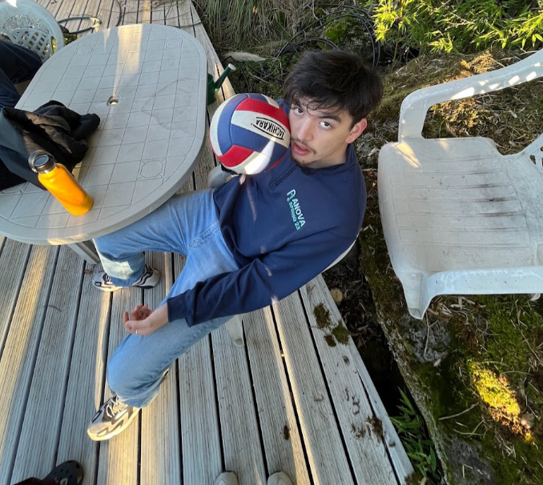

Lucas Andre Biffi
Education
University of California Berkeley Electrical Engineering and Computer Science, BS
Notable Coursework:Data Structures, Discrete Mathematics and Probability Theory, Machine Structures, Principles and Techniques of Data Science
Projects
Gitlet
Developed a miniature version of the Git file control system using Java
Formulated necessary steps for execution such as necessary data-structures, unit-tests, algorithms, methods of
persistence and classes in a design document using Markdown
File control system is able to run git commands such as commit, add, status, rm, global-log, find etc.
ANova Data Science Course
Currently collaborating with three others working on creating an intro to data science/machine learning course to
service several high schools within the SF Bay Area
Taught in PANDAS and familiarizes students with numpy methods
Designed course with aims of: creating content interesting/entertaining to audience, being accessible to all skill
levels, providing the user enough information to easily transition DS languages
CS61CPU
Part of the CS61C coursework
Developed a virtual CPU on Logism
Virtually manufactured the many parts of a CPU using basic logic gates in succession
Capable of running RISC-V assembly language instructions